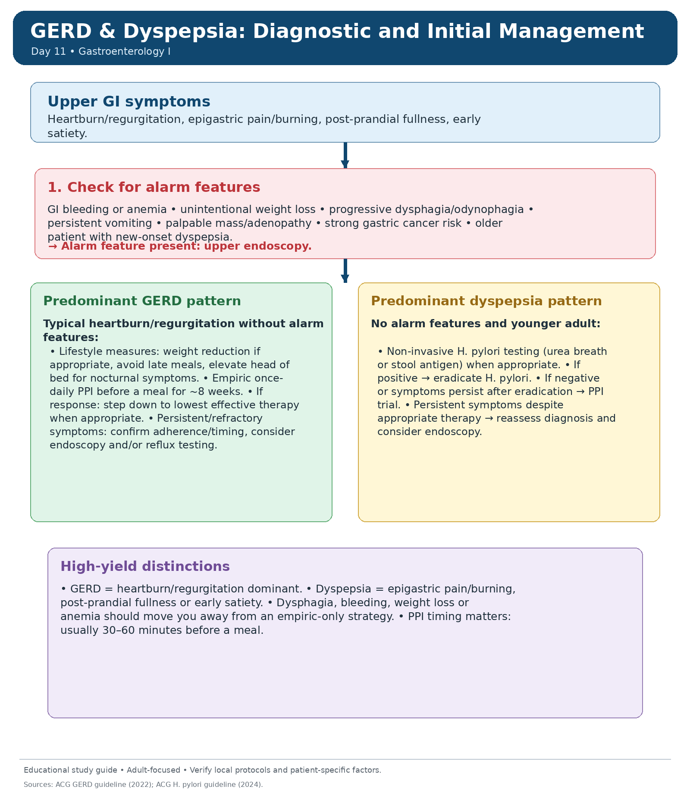
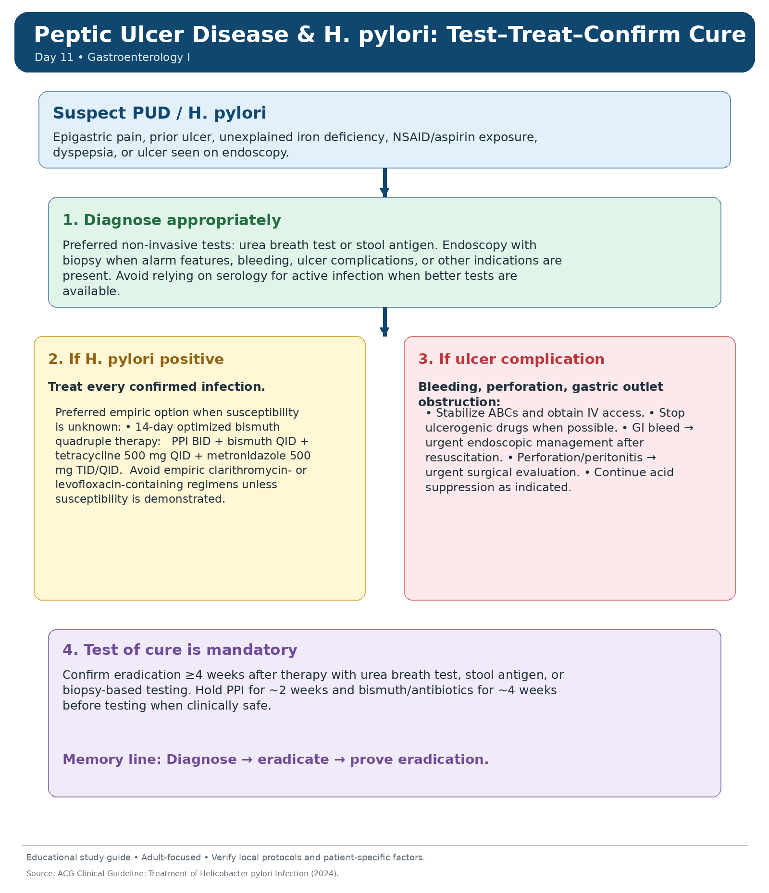
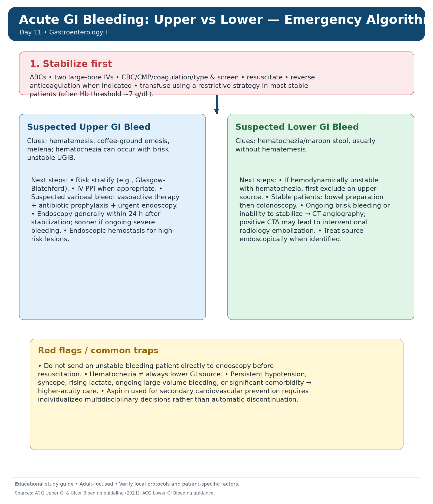
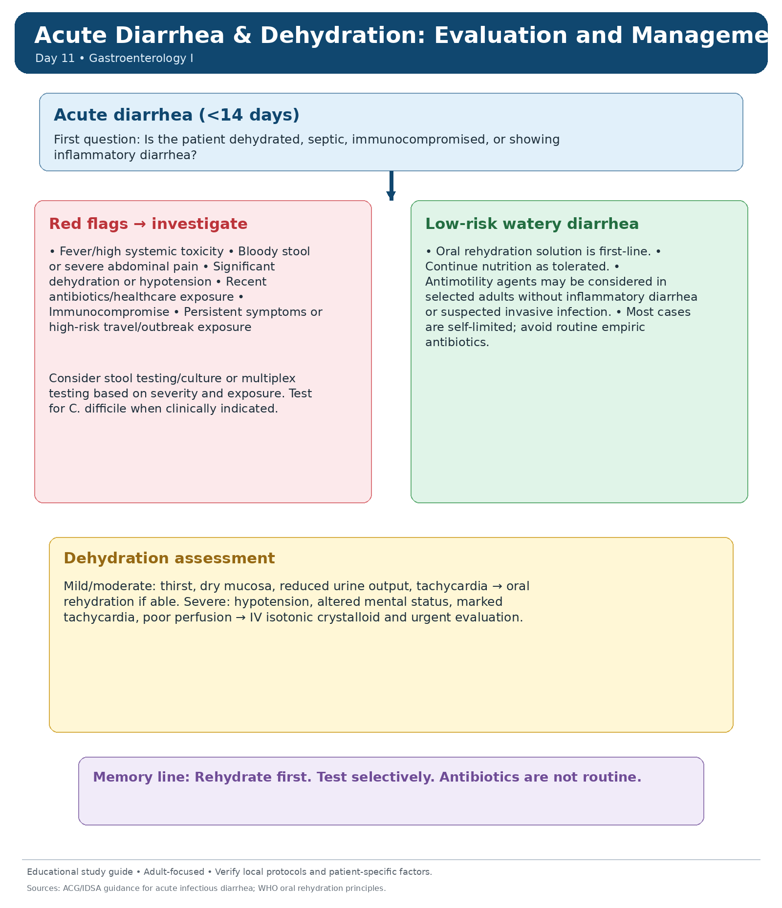
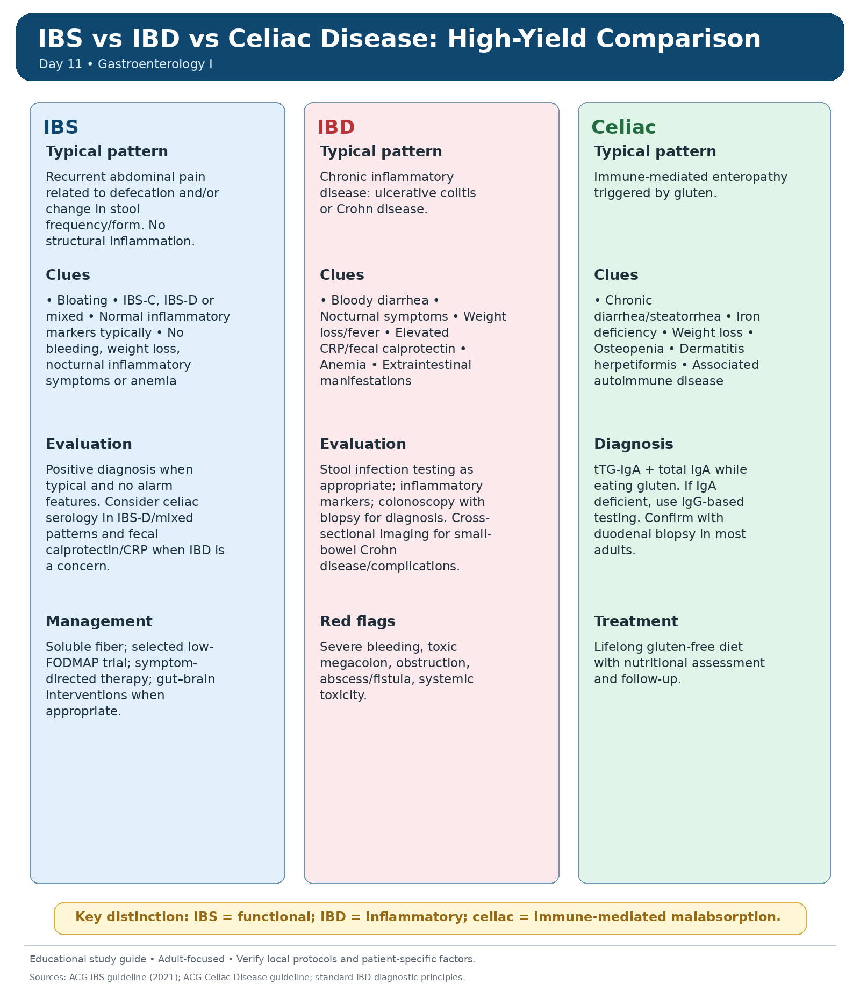
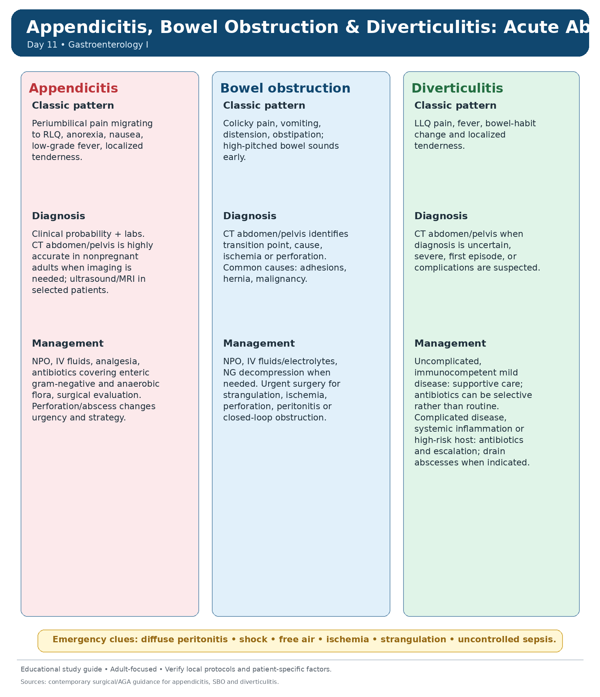

🍽️ Upper GI, Bowel & Acute Abdomen Basics
High-yield reflux, dyspepsia, H. pylori, GI bleeding, diarrhea, celiac disease and core acute abdomen topics for physician-level review.
80 questions
GERD & Dyspepsia: Initial Approach
Separate classic reflux from dyspepsia, identify alarm features, and know when empiric therapy is reasonable.
Classic patterns
- GERD: heartburn, acid regurgitation, post-prandial or nocturnal symptoms.
- Dyspepsia: epigastric pain/burning, post-prandial fullness, early satiety.
- Alarm symptoms: dysphagia, odynophagia, GI bleeding, iron deficiency anemia, weight loss, persistent vomiting, palpable mass, or new symptoms in an older patient.
High-yield initial management
- Typical uncomplicated GERD: lifestyle measures + empiric PPI trial.
- Dyspepsia without alarm features: consider noninvasive H. pylori testing and treat if positive.
- Persistent or refractory symptoms: check adherence/timing of PPI, reassess diagnosis, and consider endoscopy.
Exam pearls
- PPI works best when taken 30–60 minutes before a meal.
- Nocturnal reflux: head-of-bed elevation and avoiding late meals help.
- Do not label symptoms as “simple reflux” when alarm features are present.
Red flags / pitfalls
- Progressive dysphagia raises concern for stricture, malignancy or severe esophagitis.
- Chest pain can mimic GERD, but life-threatening cardiac causes must be excluded when clinically relevant.
- Uninvestigated weight loss or anemia should move you toward endoscopy rather than repeated empiric treatment.
🩺 GERD & Dyspepsia Diagnostic and Initial Management
Click to open/close.
Peptic Ulcer Disease & H. pylori
Know how to test for active infection, eradicate it correctly, and recognize ulcer complications.
Diagnosis
- Suspect PUD with epigastric pain, prior ulcer, unexplained iron deficiency, or NSAID/aspirin exposure.
- Preferred tests for active H. pylori infection: urea breath test or stool antigen.
- Endoscopy is indicated for alarm features, bleeding, suspected ulcer complications, or persistent concerning symptoms.
Treatment principle
- Confirmed H. pylori should be treated and later checked with a test of cure.
- Current high-yield empiric option when susceptibility is unknown: 14-day optimized bismuth quadruple therapy.
- Stop or minimize ulcerogenic drugs when possible; continue acid suppression when indicated.
Important medication pearls
- Bismuth quadruple therapy = PPI + bismuth + tetracycline + metronidazole.
- Hold PPI before test-of-cure when clinically safe; confirm eradication at least 4 weeks after treatment.
- NSAID ulcers often require both ulcer healing and future gastroprotection planning.
Complications to recognize
- Bleeding: melena, hematemesis, anemia, orthostasis.
- Perforation: sudden severe pain, peritonitis, free air.
- Gastric outlet obstruction: persistent vomiting and distension.
🩺 Peptic Ulcer Disease & H. pylori: Test–Treat–Confirm Cure
Click to open/close.
Upper GI Bleeding
Resuscitation comes first; then risk stratify and proceed to early endoscopic management.
Recognition
- Typical clues: hematemesis, coffee-ground emesis, or melena.
- A brisk upper source can also present with hematochezia, especially if the patient is unstable.
- Common causes: peptic ulcer disease, erosive disease, varices, Mallory–Weiss tear.
Immediate approach
- Stabilize ABCs, place large-bore IV access, send labs, type & screen, and resuscitate.
- Use restrictive transfusion strategy in most stable patients; individualize in shock or major comorbidity.
- Start IV PPI when non-variceal UGIB is suspected; suspected variceal bleed also needs vasoactive therapy and antibiotic prophylaxis.
Endoscopy pearls
- After stabilization, endoscopy is generally performed within 24 hours.
- Urgent endoscopy is needed sooner for severe ongoing bleeding or suspected variceal hemorrhage.
- High-risk endoscopic lesions require endoscopic hemostasis.
Red flags
- Shock, syncope, rising lactate, ongoing hematemesis, or dropping hemoglobin suggest high-risk disease.
- Do not send an unstable patient to endoscopy before adequate initial resuscitation.
- Always think of cirrhosis/portal hypertension when variceal bleeding is possible.
🩺 Acute GI Bleeding: Upper vs Lower — Emergency Algorithm
Click to open/close.
Lower GI Bleeding
Approach hematochezia systematically and remember that an upper source must still be excluded in the unstable patient.
Recognition & causes
- Typical presentation: hematochezia or maroon stool.
- Common causes include diverticular bleeding, hemorrhoids, angiodysplasia, ischemic colitis, inflammatory bowel disease and colorectal neoplasia.
- In severe unstable hematochezia, first consider whether the source is actually upper GI.
Approach
- Resuscitate first as with any GI bleed.
- Stable patients usually proceed to bowel preparation then colonoscopy.
- Ongoing brisk bleeding or inability to localize with endoscopy may require CT angiography and possible interventional radiology.
High-yield differentiators
- Painful bloody diarrhea suggests inflammatory or ischemic disease more than painless diverticular bleeding.
- Ischemic colitis often causes abdominal pain followed by bloody stool in an older vascular-risk patient.
- Hemorrhoids cause bright red blood but should not automatically explain anemia or systemic symptoms.
Red flags / traps
- Hypotension, syncope, major ongoing bleeding, or severe anemia indicate higher acuity.
- Do not ignore colorectal cancer screening/diagnostic implications when bleeding is unexplained.
- Persistent pain with bleeding may indicate ischemia or severe colitis.
🩺 Acute GI Bleeding: Upper vs Lower — Emergency Algorithm
Click to open/close.Acute Diarrhea & Dehydration
Rehydration is the priority; test selectively and avoid unnecessary antibiotics.
Clinical approach
- Start by asking: watery or inflammatory? mild or dehydrating? recent antibiotics? travel? immunocompromise?
- Assess dehydration severity: thirst, dry mucosa, reduced urine, tachycardia, hypotension, or altered mental status.
- Most simple watery diarrheal illnesses are self-limited.
Management basics
- Oral rehydration is first-line when the patient can drink.
- Severe dehydration or shock requires IV isotonic fluid and urgent evaluation.
- Continue nutrition as tolerated; select antimotility agents carefully and avoid them in suspected invasive/inflammatory diarrhea.
When to test / treat
- Order stool testing when there is fever, bloody stool, severe illness, immunocompromise, outbreak/travel concerns, or recent antibiotic exposure.
- Think of C. difficile when there is compatible recent antibiotic or healthcare exposure.
- Routine empiric antibiotics are usually not required in low-risk watery diarrhea.
Danger signs
- Hypotension, persistent tachycardia, confusion, severe abdominal pain, bloody stool, or toxic appearance.
- Children and frail adults dehydrate faster, but severe dehydration matters in adults too.
- In the exam setting, the first life-saving step is almost always rehydration.
🩺 Acute Diarrhea & Dehydration: Evaluation and Management
Click to open/close.
IBS vs IBD
Differentiate functional bowel symptoms from true inflammatory disease that requires investigation.
IBS pattern
- Recurrent abdominal pain related to defecation and/or change in stool frequency or form.
- Often associated with bloating and chronic symptoms but without systemic inflammatory features.
- A positive diagnosis is appropriate when Rome-type features are present and alarm features are absent.
IBD pattern
- Think IBD with chronic diarrhea plus bleeding, weight loss, nocturnal symptoms, fever, anemia, or elevated inflammatory markers.
- Ulcerative colitis and Crohn disease are the classic entities.
- Diagnosis is supported by fecal calprotectin/CRP and confirmed with colonoscopy plus biopsy.
Testing pearls
- Fecal calprotectin helps distinguish inflammatory disease from IBS in the right clinical context.
- Infectious causes should be considered before labeling a flare as IBD.
- IBS does not explain persistent rectal bleeding, fever, or significant anemia.
Red flags
- Severe bleeding, toxic megacolon, obstruction, fistula/abscess, or significant systemic toxicity require urgent evaluation.
- Never reassure a patient as IBS when alarm features are present.
- Weight loss or nocturnal symptoms should always slow you down and broaden the differential.
🩺 IBS vs IBD vs Celiac Disease: High-Yield Comparison
Click to open/close.
Celiac Disease
Recognize malabsorption clues, order the correct serology while the patient is still eating gluten, and confirm properly.
Clinical clues
- Chronic diarrhea, bloating, steatorrhea, iron deficiency, weight loss, osteopenia/osteoporosis, aphthous ulcers, or dermatitis herpetiformis.
- Can also present with isolated iron deficiency or other subtle nutritional deficiencies.
- Associated autoimmune conditions are common.
Diagnosis
- Screen with tTG-IgA plus total IgA while the patient is still consuming gluten.
- If IgA deficient, use IgG-based serology.
- Most adults require confirmation with duodenal biopsy.
Management
- Treatment is a strict lifelong gluten-free diet.
- Assess and correct nutritional deficiencies, especially iron, folate, vitamin D and bone health issues.
- Persistent symptoms despite treatment should prompt review of adherence and alternate diagnoses.
Pitfalls
- Do not start a gluten-free diet before appropriate testing if you still need diagnostic confirmation.
- IBS-like symptoms do not exclude celiac disease.
- Unexplained iron deficiency anemia is a high-yield exam clue.
🩺 IBS vs IBD vs Celiac Disease: High-Yield Comparison
Click to open/close.Appendicitis, Bowel Obstruction & Diverticulitis
Three common acute-abdomen diagnoses that are easy to test and important to distinguish early.
Appendicitis
- Classic pattern: periumbilical pain migrating to the RLQ, anorexia, nausea, low-grade fever and localized tenderness.
- CT is highly accurate in many adults when imaging is needed; ultrasound/MRI are used selectively.
- Management includes analgesia, IV fluids, antibiotics and surgical evaluation.
Small bowel obstruction (SBO)
- Think of colicky pain, vomiting, abdominal distension and obstipation.
- CT helps find the transition point, etiology, and complications such as ischemia.
- Initial management: NPO, fluids/electrolytes, NG decompression when needed; urgent surgery if strangulation, ischemia, perforation or peritonitis is suspected.
Diverticulitis
- Typical presentation: LLQ pain, fever, bowel habit change and localized tenderness.
- CT is useful when diagnosis is uncertain or complicated disease is suspected.
- Mild uncomplicated disease in immunocompetent adults may be managed selectively without routine antibiotics; complicated or high-risk disease requires escalation.
Surgical red flags
- Diffuse peritonitis, free air, persistent sepsis, bowel ischemia, closed-loop obstruction or shock.
- Do not delay escalation when obstruction or appendicitis is complicated.
- The acute abdomen is not the time for repeated outpatient symptomatic treatment.
🩺 Appendicitis, Bowel Obstruction & Diverticulitis: Acute Abdomen Guide
Click to open/close.
⚡ Day 11 Rapid Review
Day 11 completion
Mark complete when you finish the notes, practice questions and QBank block.